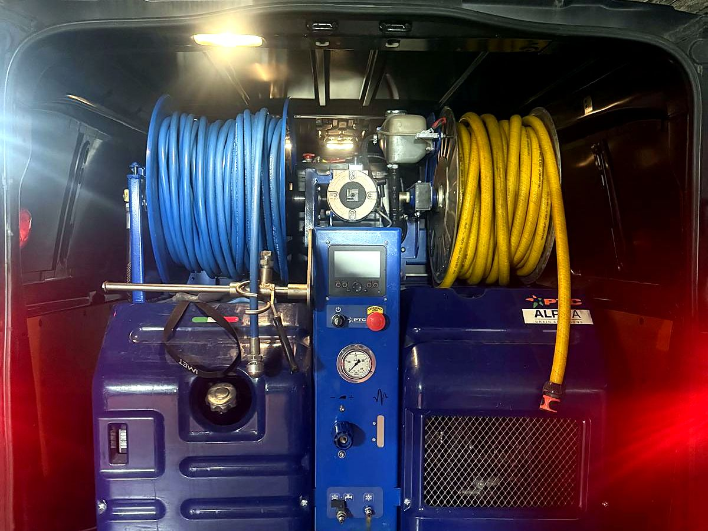
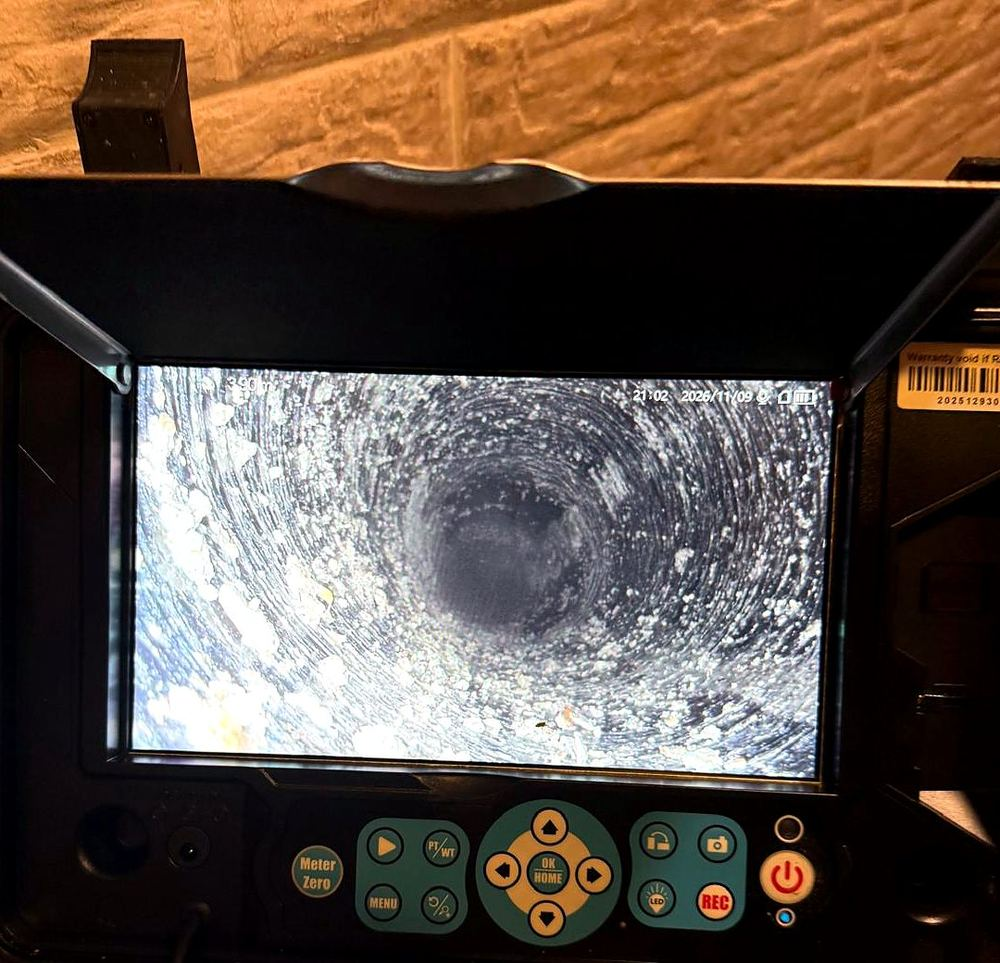
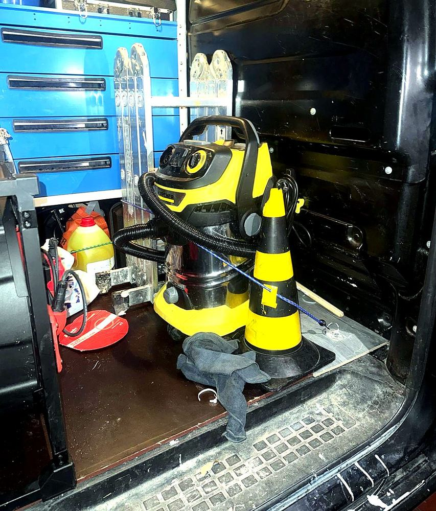

WC, évier, douche ou égout bouché ? Un déboucheur arrive chez vous en moins de 30 minutes à Bruxelles, 24h/24 et 7j/7. Débouchage dès 130 € TVAC, prix annoncé avant de commencer.
Devis gratuit par téléphone · Sans engagement

Pas de mauvaise surprise : vous savez ce que vous payez avant que l'on commence.
Expliquez-nous le problème. On vous donne une estimation par téléphone, gratuitement.
Un déboucheur est chez vous en moins de 30 minutes à Bruxelles, moins d'1 heure en périphérie.
On vous confirme le prix sur place, avant de commencer. Puis on règle le problème proprement.
Particuliers, syndics, commerces et restaurants : nous avons le matériel adapté, du furet à la haute pression.
Toilettes bouchées ou qui débordent ? On intervient en urgence.
En savoir plus →Évier de cuisine, lavabo : fini l'eau qui stagne et les odeurs.
En savoir plus →Écoulement lent ou bouché ? On dégage la canalisation.
En savoir plus →Égout bouché, refoulement, cave inondée : intervention rapide.
En savoir plus →On trouve l'origine exacte du bouchon ou de la fissure.
En savoir plus →Nettoyage en profondeur pour éviter que ça se rebouche.
En savoir plus →Basés à côté de Bruxelles, nous arrivons vite dans les 19 communes.
Devis gratuit par téléphone, prix confirmé sur place. Pas de compteur qui tourne.
Week-ends et jours fériés compris. Un vrai professionnel vous répond.
Un travail propre et durable. Si le problème revient, on revient.
Note de 5,0/5 sur Google.
« Nous avions un problème de WC bouché, avec une évacuation d’eau totalement impossible. Le technicien est intervenu rapidement et a trouvé la solution avec beaucoup de compétence. »
« Problème de WC bouché, impossible de faire évacuer l’eau. Le technicien a trouvé la solution rapidement. Très sympathique et surtout très compétent. »
« J’avais un gros problème d’égout bouché, avec de mauvaises odeurs et de l’eau qui remontait. Très satisfait du service ! »
Pas de photos de banque d'images : voici nos vrais chantiers à Bruxelles et en périphérie.






Nous intervenons dans les 19 communes de la Région de Bruxelles-Capitale.
Périphérie (Wemmel, Meise, Grimbergen, Dilbeek, Zaventem…) : sur place en moins d'1 heure.
Un débouchage simple (WC, évier, douche) commence à 130 € TVAC. Le prix final dépend du type de bouchon et du matériel nécessaire (furet, haute pression, caméra). Appelez-nous : nous vous donnons une estimation gratuite par téléphone, et le prix est confirmé sur place avant de commencer.
En moins de 30 minutes dans Bruxelles, et en moins d'1 heure en périphérie.
Oui. Nous sommes joignables 24h/24 et 7j/7, week-ends et jours fériés compris.
Notre travail est garanti : satisfait ou refait. Si le bouchon revient, appelez-nous.
Oui, nous débouchons aussi les colonnes communes, cuisines professionnelles et installations industrielles.
N'attendez pas que l'eau déborde. Un déboucheur vous répond tout de suite.
0494 34 60 19Laissez votre numéro, on vous rappelle très vite.